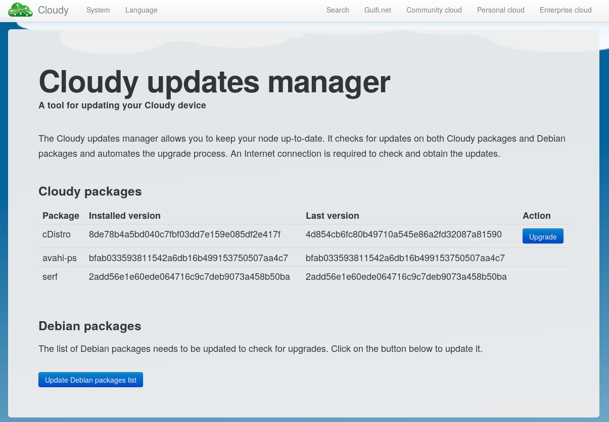
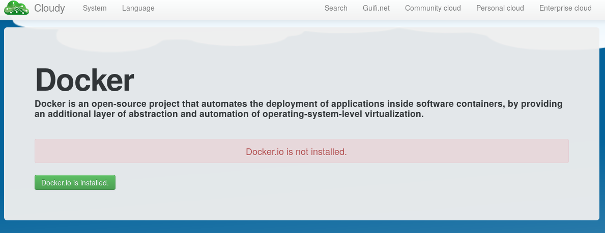
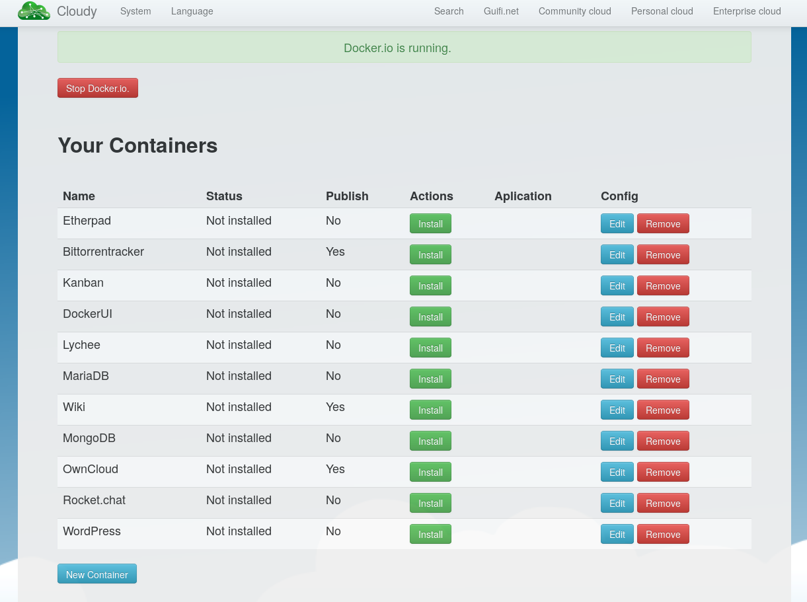
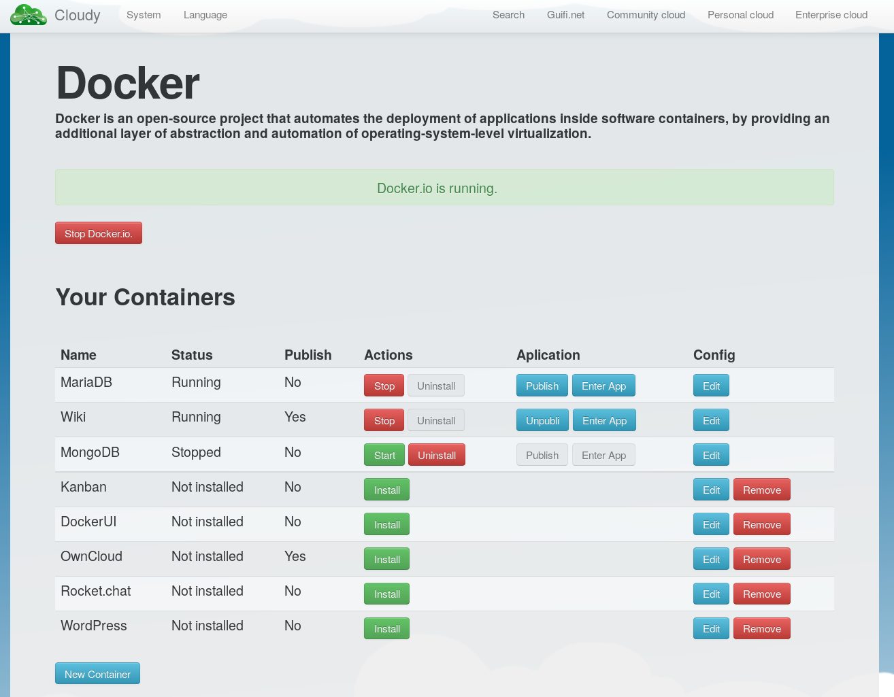
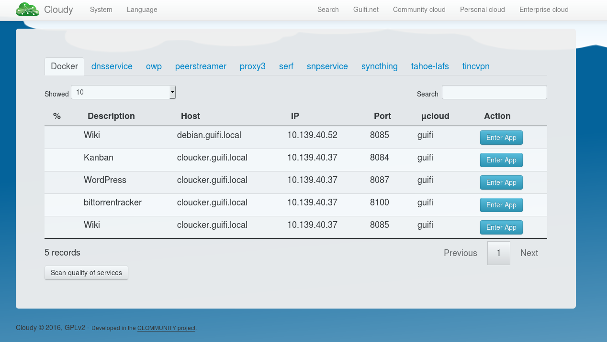

A community networking cloud in a box.
Clommunity project
<web_interface> System/Updates -> Update in cDistro 




web: http://cloudy.community
mail: cloudy at guifi.net
mail-lists: cloudy-users cloudy-dev
https://github.com/Clommunity/sax2016-CloudyAdvanced